Guia passo a passo para administradores, médicos, enfermeiros e pacientes
Como entrar no sistema, registar pacientes, fazer a triagem, atender consultas, prescrever, pedir e acompanhar exames, usar o assistente de inteligência artificial, gerir utilizadores e consultar o portal do paciente.
Sistema: LeeVida — Clínica EmiPharma, Caála, Huambo Autora: Nancylee Danila Tome Jamba · ISPTEC Versão do documento: 1.0 · Novembro de 2026 Nota: as imagens mostram dados fictícios de demonstração.
Índice
1. Bem-vindo ao LeeVida
2. Primeiros passos
Entrar no sistema · Primeira senha · A interface · Notificações · Perfil e senha · Tema escuro · Exportar dados
3. Enfermeiro
Registar um paciente · Fazer a triagem · Acompanhar exames
4. Médico
Painel · Agenda · Consultas e fila de atendimento · Ficha do paciente · Atender e concluir · Prescrições · Exames · Justificativos · Assistente de IA · Histórico clínico
5. Paciente
Portal · Marcar consulta · Consultar o histórico · Actualizar os dados
6. Administrador
Gerir utilizadores · Repor senha e desactivar contas · Registo de auditoria
7. Inteligência artificial: o que faz e como usar com segurança
8. Perguntas frequentes
9. Glossário
1. Bem-vindo ao LeeVida
O LeeVida é o sistema de prontuário electrónico da clínica. Substitui as fichas em papel e os ficheiros soltos no computador por um registo único, organizado e seguro de cada paciente: dados pessoais, triagens, consultas, diagnósticos, receitas e exames.
Cada pessoa entra com a sua própria conta e vê apenas o que o seu perfil permite:
Perfil
O que pode fazer
Enfermeiro
Registar pacientes e entregar-lhes as credenciais, fazer a triagem (sinais vitais, sintomas e prioridade) e acompanhar o estado dos exames. Não vê os resultados dos exames.
Médico
Gerir a agenda, aceitar consultas, atender a fila por prioridade, registar diagnósticos, prescrever, pedir exames e registar resultados, emitir justificativos e usar o assistente de IA.
Paciente
Marcar consultas e consultar o próprio histórico, receitas e exames, a partir do telemóvel ou do computador.
Administrador
Criar e gerir as contas dos profissionais e consultar o registo de auditoria.
ConfidencialidadeTudo o que faz no sistema fica registado (quem, o quê e quando). Use apenas a sua conta e nunca partilhe a senha, nem com colegas.
2. Primeiros passos
2.1 Entrar no sistema
Abra o navegador (Chrome, Edge ou Firefox) e vá ao endereço do LeeVida indicado pela clínica.
Escreva o seu Email e a sua Senha. O ícone do olho mostra a senha enquanto escreve.
Clique em Entrar. O sistema abre o painel do seu perfil.
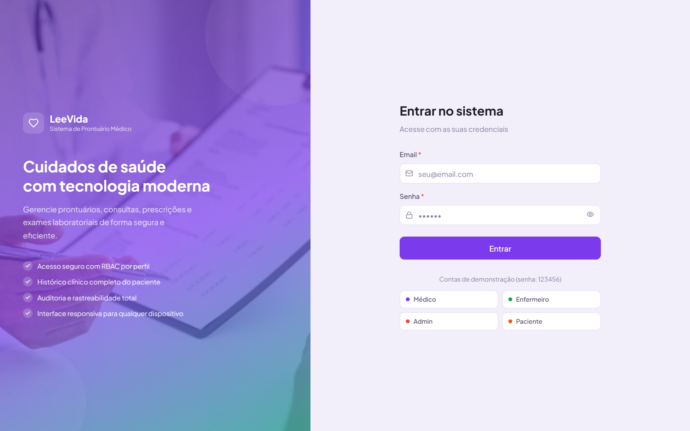
Ecrã de autenticação.
2.2 Primeira senha
As contas novas, e as contas cuja senha foi reposta, recebem uma senha provisória. No primeiro acesso, o sistema pede-lhe que a troque. A nova senha deve ter pelo menos 8 caracteres, com letras e números.
2.3 A interface
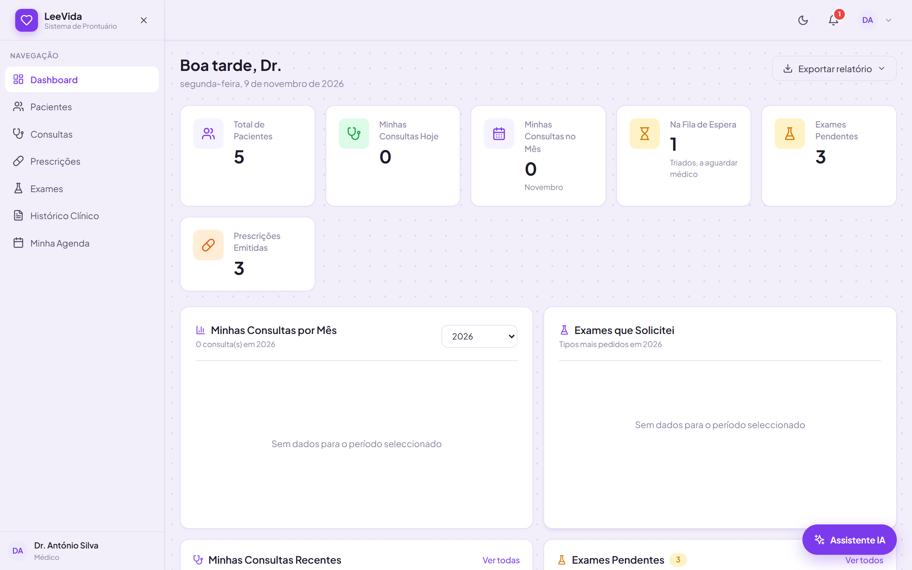
Painel principal (perfil de médico).
Menu lateral (esquerda): as áreas a que o seu perfil tem acesso. O ✕ no topo recolhe o menu.
Barra superior (direita): botão de tema (lua), sino de notificações e o seu avatar, com acesso ao perfil e à saída.
Painel: indicadores do seu trabalho (pacientes, consultas do dia, fila de espera, exames pendentes) e gráficos por mês.
Assistente IA (canto inferior direito): só para médicos (secção 4.9).
2.4 Notificações
O sino mostra quantas notificações por ler tem. Chegam em tempo real, sem recarregar a página: um paciente triado à espera, uma consulta aceite, uma receita disponível, um exame com valor crítico, etc. Clique no sino para as ver, marcar como lidas ou limpar.
2.5 Perfil, foto e senha
Clique no seu avatar e escolha o perfil. Pode mudar a fotografia e usar Alterar senha (pede a senha actual e a nova).
2.6 Tema escuro
O botão com a lua alterna entre tema claro e escuro. A escolha fica guardada no seu navegador.
2.7 Exportar dados
As listagens têm um botão Exportar (por exemplo, Exportar relatório, Exportar prontuário, Exportar triagens), que gera um ficheiro Excel (.xlsx) ou PDF. Cada exportação fica registada na auditoria. Guarde estes ficheiros em local seguro: contêm dados de saúde.
2.8 Sair
Use sempre Sair no menu do avatar quando terminar, sobretudo em computadores partilhados.
3. Enfermeiro
3.1 Registar um paciente
No menu, abra Pacientes e clique em Novo Paciente.
Preencha os dados: nome, data de nascimento, sexo, BI, telefone, morada, grupo sanguíneo, alergias, e-mail e contacto de emergência.
Clique em Registar Paciente.
Aparece a janela Credenciais de Acesso com o e-mail e uma senha provisória. Esta senha só é mostrada uma vez. Copie-a ou imprima-a e entregue-a ao paciente.
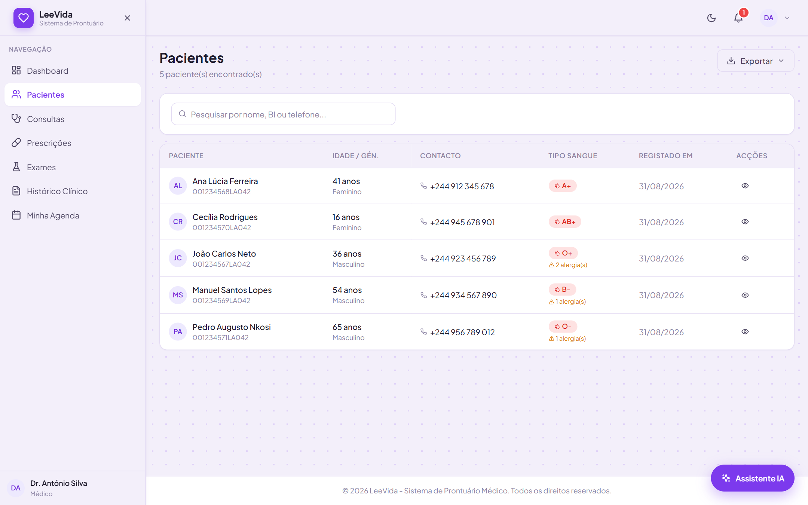
Lista de pacientes, com pesquisa por nome, BI ou telefone.
DicaAs alergias são muito importantes: o sistema usa-as para avisar o médico quando uma receita contém um medicamento perigoso para o paciente. Registe todas, uma por linha.
Os pacientes nunca são apagados. Se for preciso retirar um paciente das listagens, use Arquivar; o prontuário fica preservado.
3.2 Fazer a triagem
Abra Triagem no menu e escolha o paciente.
Registe os sinais vitais: tensão sistólica e diastólica, frequência cardíaca, temperatura, peso, altura e saturação de O₂. O sistema indica logo valores anormais (por exemplo, "Alta").
Escreva os Sintomas Iniciais com o máximo de detalhe (o quê, há quanto tempo, intensidade).
Clique em Sugerir com IA. Em segundos aparece a cor sugerida, uma justificação e os sinais de alarme encontrados.
Confirme a cor ou escolha outra, conforme o seu juízo clínico.
Clique em Registar Sinais Vitais. O paciente entra na fila do médico e os médicos são notificados. Com vermelho ou laranja, o aviso é marcado como atendimento prioritário.
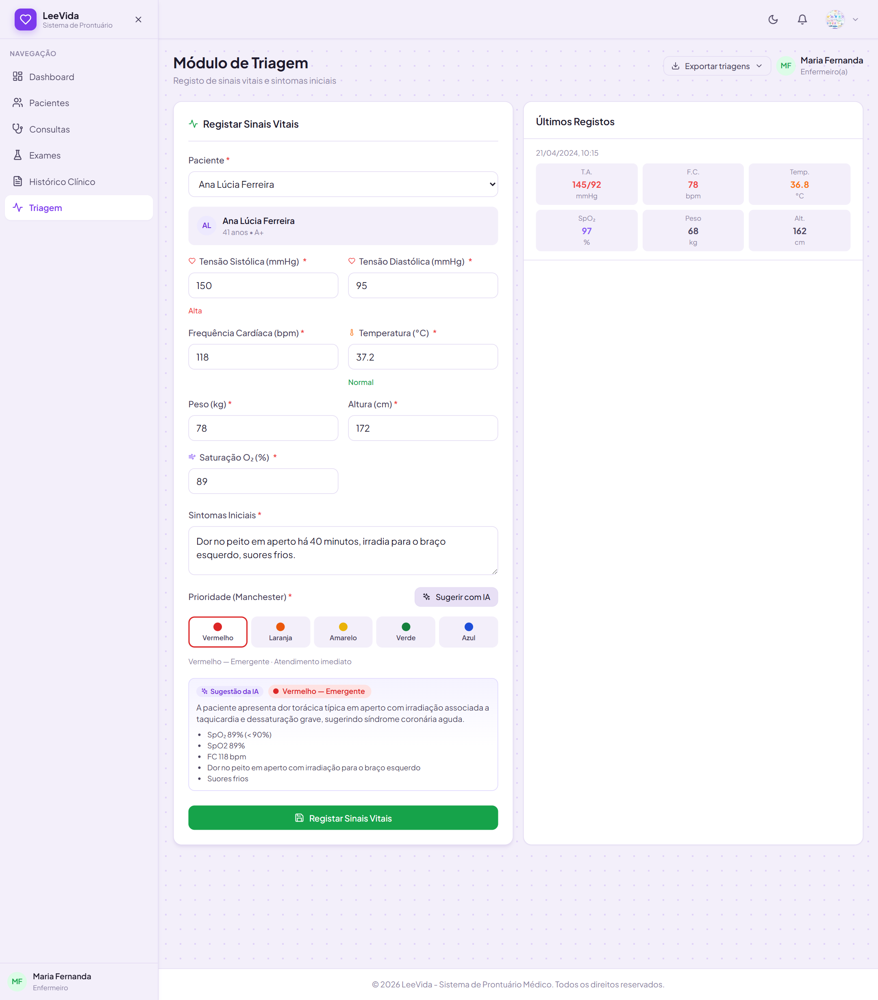
Triagem com sugestão de prioridade pela IA.
A segurança vem primeiroMesmo sem IA, o sistema calcula uma prioridade mínima a partir dos sinais vitais (por exemplo, saturação abaixo de 90% é, no mínimo, laranja). A IA pode subir a prioridade, nunca baixá-la desse mínimo. Se a IA estiver indisponível, aparece o aviso "sugestão só pelos sinais vitais".
3.3 Acompanhar exames
Em Exames vê os exames pedidos e o seu estado (Solicitado, Em análise, Concluído). Por confidencialidade, o enfermeiro não vê os resultados nem a análise da IA: a coluna de resultados não aparece.
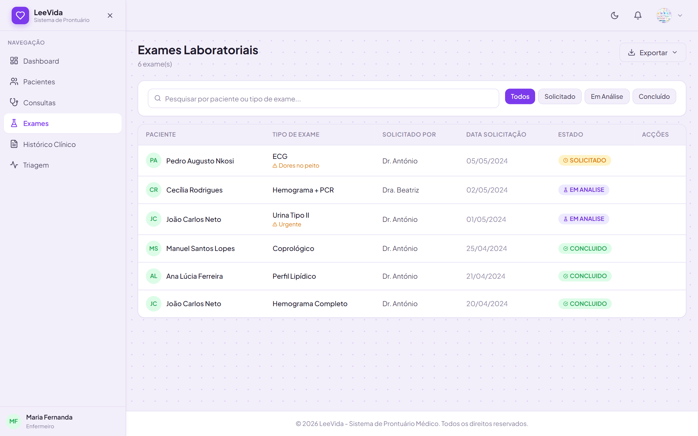
Exames no perfil do enfermeiro, sem resultados.
4. Médico
4.1 Painel
O painel mostra as suas consultas de hoje e do mês, quantos pacientes triados estão à espera, os exames pendentes que pediu e as prescrições emitidas.
4.2 Agenda
Abra Minha Agenda.
Marque os dias em que atende e defina a hora de início e de fim de cada dia.
Clique em Guardar Disponibilidade.
Só os médicos com agenda activa aparecem aos pacientes na marcação de consultas, e apenas dentro do horário definido.
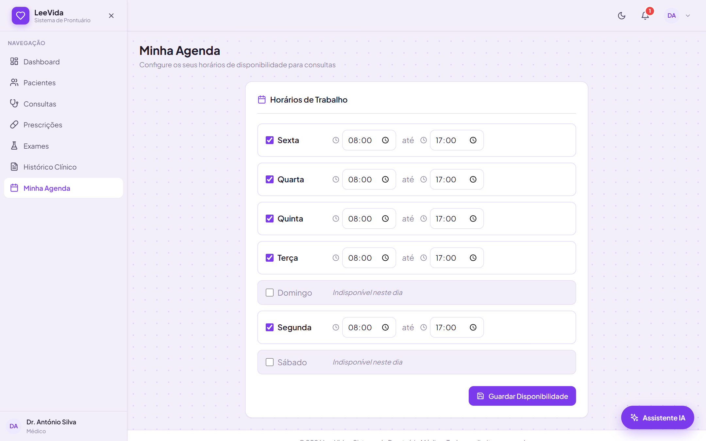
Agenda de disponibilidade.
4.3 Consultas e fila de atendimento
Em Consultas, o quadro Fila de Atendimento mostra os pacientes triados por ordem de prioridade (vermelho primeiro) e, depois, por hora de chegada. Por baixo fica a lista de todas as consultas, com filtros por estado.
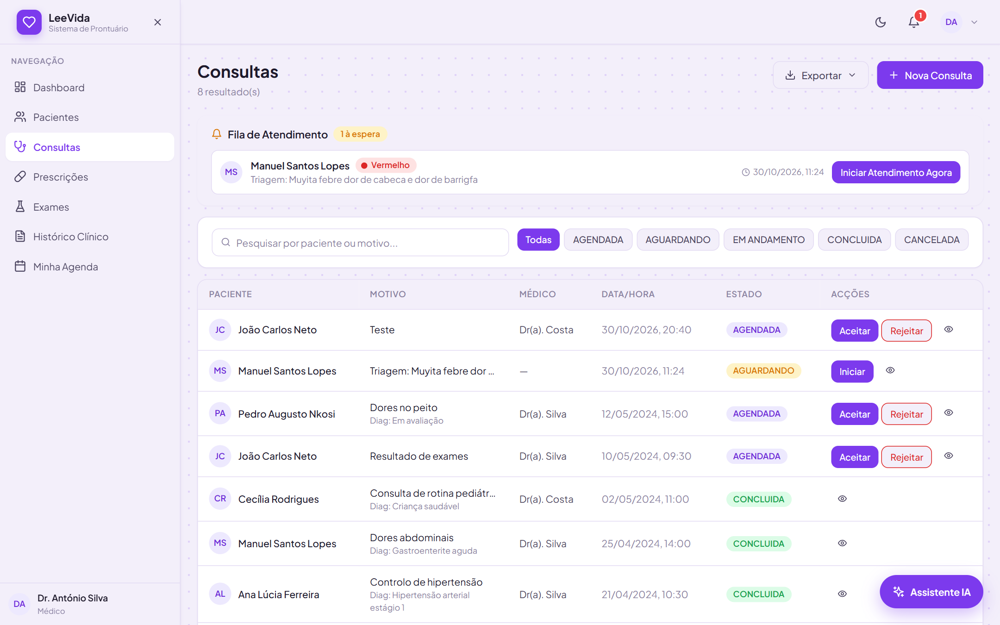
Fila de atendimento e lista de consultas.
Consulta marcada por um paciente (estado Agendada): clique em Aceitar para a confirmar ou em Rejeitar para a cancelar. O paciente é notificado.
Paciente da fila: clique em Iniciar Atendimento Agora.
Nova consulta ou consulta de retorno: clique em Nova Consulta. Para acompanhar um atendimento anterior, marque Consulta de Retorno.
4.4 Ficha do paciente e resumo pré-consulta
Ao abrir um paciente (em Pacientes, ícone do olho), aparecem os dados pessoais, as consultas, os exames, as prescrições e o contacto de emergência. No topo, o cartão Resumo pré-consulta (IA) resume em segundos os pontos-chave, os problemas activos, a medicação e as alergias, e o que vigiar nesta consulta.
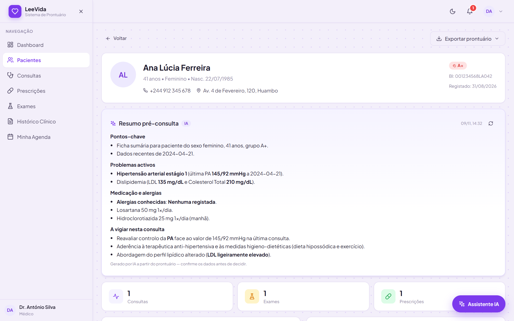
Ficha do paciente com resumo pré-consulta.
Confirme sempreO resumo é gerado a partir do prontuário e pode omitir ou interpretar mal alguma informação. Use-o para se orientar, não como fonte única.
4.5 Atender e concluir a consulta
Depois de iniciar o atendimento, registe o diagnóstico e as notas clínicas.
Opcional: clique em Sugerir CID-10. A IA propõe de um a quatro códigos com a designação; escolha os que se aplicam.
Se necessário, emita a prescrição (4.6) e peça exames (4.7).
Clique em Concluir Consulta. O histórico clínico do paciente é actualizado.
4.6 Prescrições
Em Prescrições, clique em Nova Prescrição.
Escolha o paciente e, se aplicável, a consulta associada.
Para cada medicamento, indique o nome, a dosagem, a frequência e a duração. Use Adicionar para mais medicamentos.
Opcional: Pedir sugestão à IA abre o assistente com o paciente e a consulta já em contexto.
Escreva as instruções para o paciente e emita a receita. Fica no estado Pendente.
Para assinar, clique no ícone Verificar e assinar. O sistema verifica a receita e mostra o resultado (secção seguinte).
Depois de assinada, a receita fica disponível no portal do paciente e pode ser impressa.
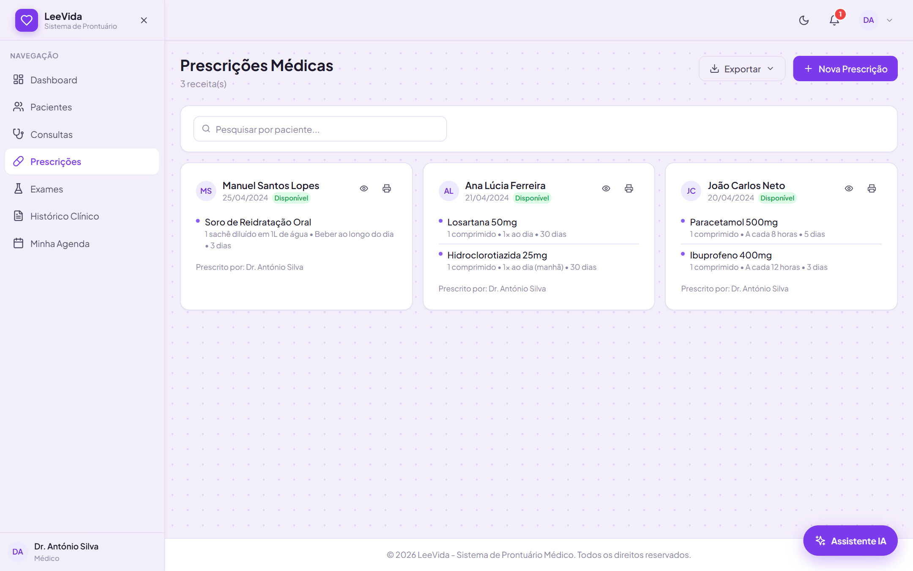
Lista de prescrições.
Verificação de segurança antes de assinar
Ao assinar, o sistema cruza a receita com as alergias registadas (sempre, mesmo sem IA) e a IA procura interacções, doses fora do habitual e contra-indicações. O resultado pode ser:
Resultado
O que significa e o que fazer
OK
Não foram encontrados problemas. Pode assinar.
Atenção
Algo merece revisão (por exemplo, uma interacção moderada). Reveja e decida.
Perigo
A receita não deve ser assinada assim. Use Corrigir receita. Se, mesmo assim, decidir assinar, tem de marcar que reviu os alertas, e essa decisão fica registada na auditoria.
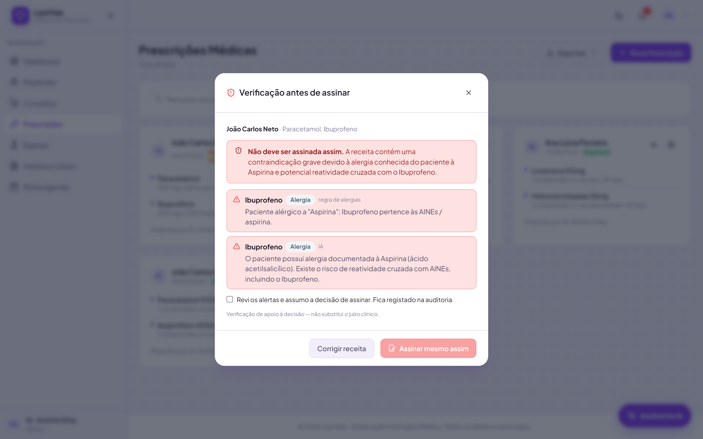
Exemplo de resultado "Perigo": ibuprofeno num paciente alérgico à aspirina.
4.7 Exames
Em Exames, clique em Solicitar Exame, escolha o paciente e o tipo de exame.
Quando o resultado chegar, use Registar Resultado e escreva os valores com as unidades (por exemplo, "Hemoglobina: 6,5 g/dL").
O sistema verifica de imediato valores críticos. Se encontrar algum, o exame fica marcado como Crítico e recebe uma notificação.
Em segundo plano, a IA analisa o resultado. Clique no ícone de IA da linha para ver os valores fora da referência e a interpretação sugerida.
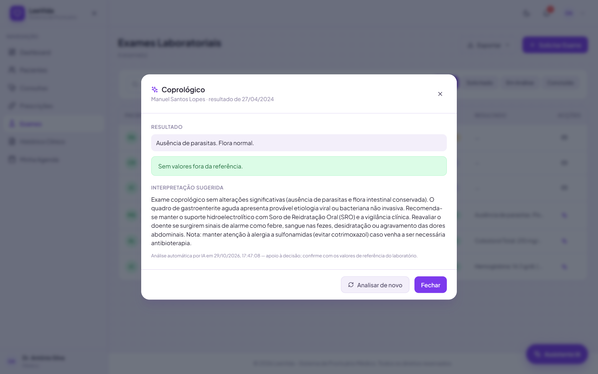
Interpretação de um resultado de exame.
4.8 Justificativos médicos
A partir de uma consulta em andamento ou concluída, clique em Gerar Justificativo, indique o motivo, os dias de repouso e as observações. O justificativo fica disponível no portal do paciente e pode ser impresso para assinatura.
4.9 Assistente de prescrição (IA)
Clique em Assistente IA, no canto inferior direito.
Opcional: em Paciente em contexto, escolha um paciente. As respostas passam a ter em conta o histórico clínico (anonimizado) desse paciente.
Escreva a pergunta: medicação, doses, interacções, redacção de uma receita.
Use Copiar para levar a resposta para a receita. O ícone do relógio mostra o histórico de conversas e o + inicia uma nova.
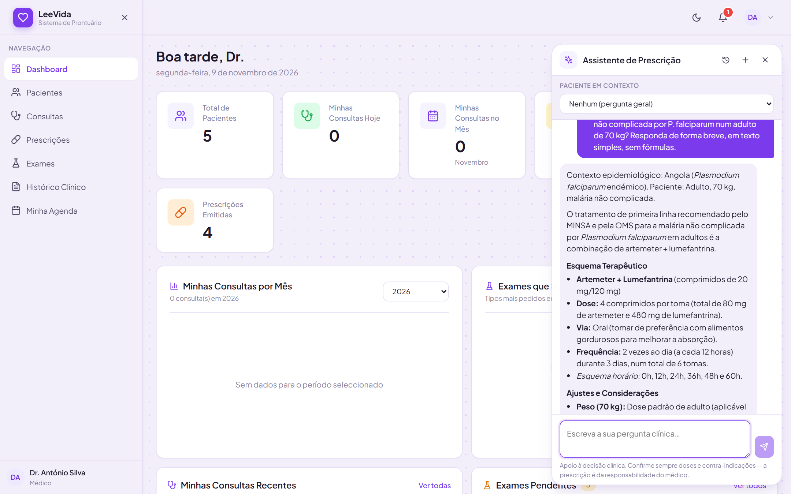
Assistente de prescrição.
As suas conversas são privadas: nenhum outro médico as vê.
4.10 Histórico clínico
Em Histórico Clínico, escolha um paciente para ver a linha do tempo completa (consultas, exames e prescrições), com filtros por tipo e pesquisa. Pode exportar o prontuário em Excel ou PDF.
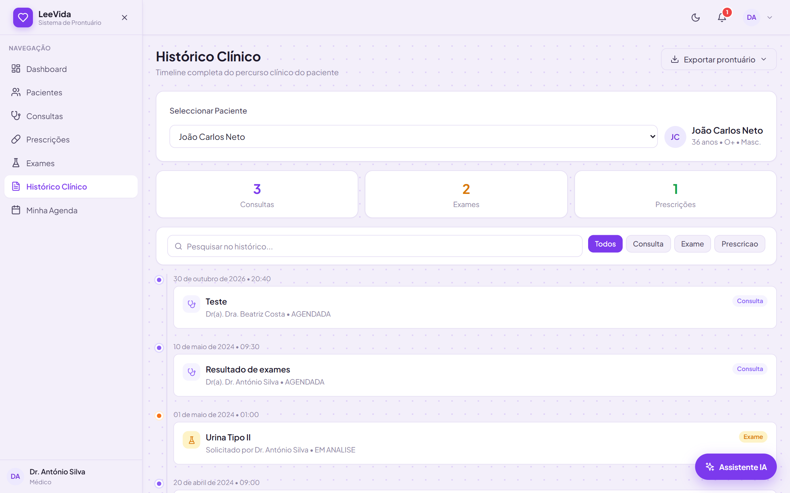
Histórico clínico de um paciente.
5. Paciente
5.1 O portal
Entre com o e-mail e a senha que recebeu do enfermeiro (no primeiro acesso, troque a senha). O portal funciona no telemóvel e no computador e mostra o número de consultas, exames e receitas, as próximas consultas e os exames recentes. A barra inferior dá acesso a Início, Consultas, Histórico e Perfil.
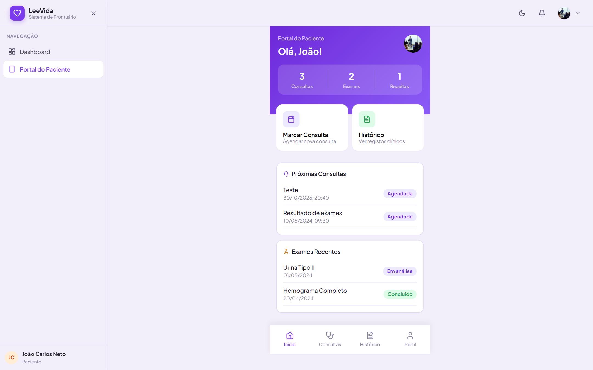
Portal do paciente.
5.2 Marcar uma consulta
Toque em Marcar Consulta.
Escolha a Especialidade. Aparecem apenas os médicos dessa especialidade com agenda disponível.
Escolha o Médico e a Data Preferida, dentro do horário do médico.
Escreva o Motivo e confirme.
A consulta fica Agendada. Recebe uma notificação quando o médico a aceitar ou rejeitar.
5.3 Consultar o histórico
Em Histórico vê as suas consultas, diagnósticos, receitas assinadas, resultados de exames e justificativos.
5.4 Actualizar os seus dados
Em Perfil, use Editar Perfil para actualizar o telefone, a morada e o contacto de emergência. Para mudar o nome ou o BI, fale com a recepção da clínica.
6. Administrador
6.1 Gerir utilizadores
Abra Administração.
Clique em Novo Utilizador, indique o nome, o e-mail, o perfil (Médico, Enfermeiro ou Administrador), a especialidade (médicos) e o departamento.
Entregue a senha provisória mostrada (só aparece uma vez).
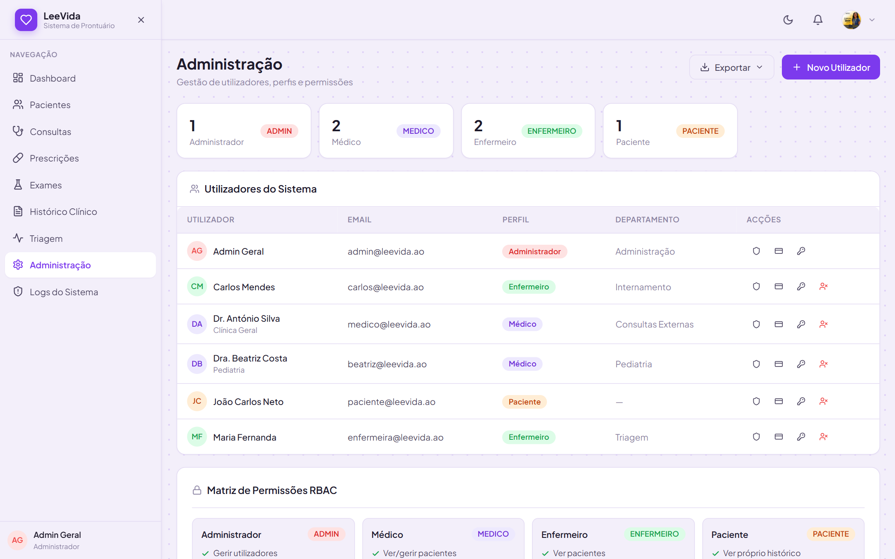
Gestão de utilizadores e matriz de permissões.
No fundo da página, a Matriz de Permissões RBAC mostra o que cada perfil pode fazer.
6.2 Repor senha e desactivar contas
Repor Senha: gera uma nova senha provisória quando alguém se esquece da sua. O utilizador tem de a trocar no próximo acesso.
Desactivar conta: impede o acesso (por exemplo, quando um profissional deixa a clínica). As contas nunca são apagadas, para preservar a autoria dos registos clínicos.
6.3 Registo de auditoria
Em Logs do Sistema vê todas as acções críticas: quem fez, o quê, sobre que recurso, quando e de que endereço IP. Inclui inícios de sessão, consultas ao prontuário, receitas, exames, exportações e cada utilização da IA. Pode pesquisar, filtrar por acção e exportar.
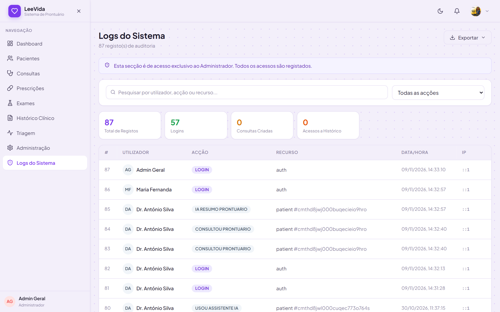
Registo de auditoria.
Boa práticaReveja os logs regularmente. Procure acessos fora de horas, consultas a muitos prontuários seguidos, ou receitas assinadas com alerta de perigo (acção ASSINOU_RECEITA_COM_ALERTA_IA).
7. Inteligência artificial: o que faz e como usar com segurança
Funcionalidade
Quem usa
Onde
Sugestão de prioridade de triagem
Enfermeiro
Triagem → Sugerir com IA
Resumo pré-consulta
Médico
Ficha do paciente (automático)
Assistente de prescrição
Médico
Botão Assistente IA; nova receita
Verificação da receita
Médico
Ao assinar uma receita
Valores críticos e interpretação de exames
Médico
Ao registar o resultado; página de Exames
Sugestão de códigos CID-10
Médico
Ao concluir a consulta
Regras de ouro
A IA sugere, o profissional decide. A responsabilidade clínica é sempre de quem confirma.
Confirme sempre doses, contra-indicações e códigos antes de os usar. A IA pode errar ou omitir informação.
Dados completos geram melhores sugestões: sinais vitais, sintomas detalhados e alergias bem registadas.
Privacidade: a IA nunca recebe o nome, o BI, o telefone ou a morada do paciente, apenas dados clínicos anónimos.
Se a IA falhar, o trabalho continua: a triagem usa os sinais vitais, a verificação de receitas cruza as alergias e os valores críticos continuam a ser detectados.
8. Perguntas frequentes
Pergunta
Resposta
Esqueci-me da senha.
Peça ao administrador para usar Repor Senha. Os pacientes devem falar com a recepção ou a enfermagem.
O sistema diz que a senha é fraca.
Use pelo menos 8 caracteres, com letras e números.
Fui desligado do sistema.
Por segurança, sessões inactivas expiram. Entre de novo.
O paciente não encontra o médico para marcar.
O médico tem de ter a agenda activa nessa especialidade e nesse dia (Minha Agenda → Guardar Disponibilidade).
Não consigo ver os resultados dos exames.
Se é enfermeiro, é intencional: os resultados são confidenciais e só o médico os vê.
Não consigo assinar uma receita.
Só o médico que a emitiu a pode assinar. Com resultado "Perigo", é preciso marcar que reviu os alertas.
A IA não responde.
O serviço pode estar sobrecarregado ou sem ligação. Continue sem IA e tente mais tarde.
Não recebo notificações.
Mantenha a página aberta; verifique a ligação à Internet e recarregue a página.
9. Glossário
Cores da triagem (Escala de Manchester)
Cor
Significado
Tempo-alvo de atendimento
Vermelho
Emergente
Imediato
Laranja
Muito urgente
Até 10 minutos
Amarelo
Urgente
Até 60 minutos
Verde
Pouco urgente
Até 120 minutos
Azul
Não urgente
Até 240 minutos
Estados
Termo
Significado
Consulta Agendada
Marcada pelo paciente ou pelo médico, ainda não iniciada.
Consulta Aguardando
Paciente triado, à espera na fila do médico.
Consulta Em andamento / Concluída / Cancelada
Em atendimento / terminada com diagnóstico / rejeitada.
Receita Pendente / Emitida
Por assinar / assinada e visível para o paciente.
Exame Solicitado / Em análise / Concluído
Pedido feito / em laboratório / resultado registado.
Termos
CID-10
Classificação Internacional de Doenças, 10.ª revisão: códigos uniformes para diagnósticos (por exemplo, B50.9).
DCI
Denominação Comum Internacional: o nome genérico de um medicamento.
RBAC
Controlo de acesso baseado em perfis: cada perfil só acede ao que precisa.
Auditoria
Registo automático e permanente das acções feitas no sistema.
Senha provisória
Senha temporária criada pela clínica, que tem de ser trocada no primeiro acesso.